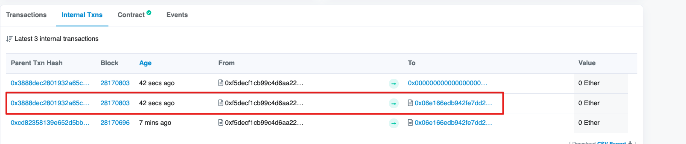
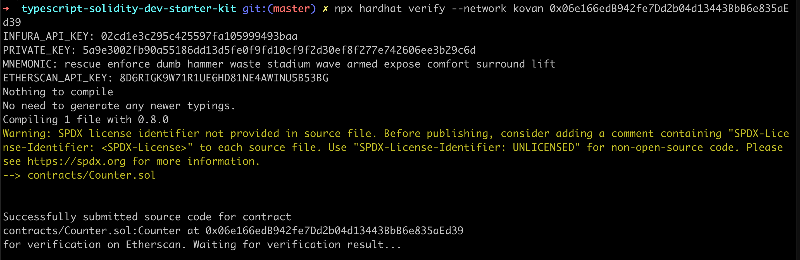
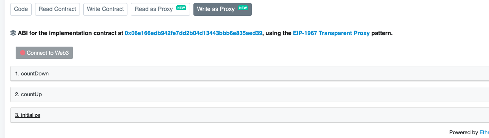
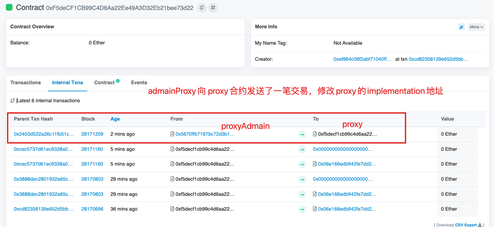
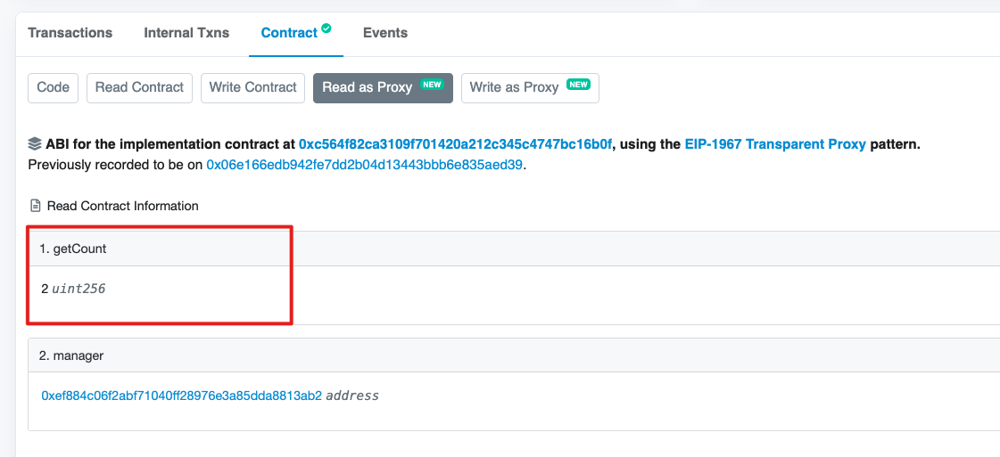

一、概述
1. 本教程介绍
- 使用hardhat部署到不同网络，自动verify代码
- 单元测试编写
- deploy脚本，deploy插件使用
- 可升级合约编写，使用，页面关联
你对工具链的所有疑问都会在这里得到demo答案！
2. hardhat框架的好处
- 在config文件中配置网络，部署在node，hardhat，其他指定的网络
- 在.env中写秘钥等信息
- 可以自动部署，Verify代码
- 可以编写单元测试
二、代码目录
参考链接：
- 教程：https://medium.com/@rahulsethuram/the-new-solidity-dev-stack-buidler-ethers-waffle-typescript-tutorial-f07917de48ae
- hardhat：https://learnblockchain.cn/docs/hardhat/guides/waffle-testing.html
三、部署在localhost
安装：
npm install
编译：
npm run compile
单元测试：
npm run test
启动本地内存区块链环境：
npx hardhat node
1. 普通部署
方式1，使用hardhat-deploy包部署，具体编写查看deploy文件夹
npx hardhat --network localhost deploy
方式2，使用脚本部署
npx hardhat run --network localhost scripts/deploy.ts
测试一下，需要修改地址testV1.ts中的地址为刚刚部署的地址。
npx hardhat run scripts/testV1.ts --network localhost
2. 可升级部署
- 以可升级方式部署合约
执行命令：
npx hardhat run --network localhost scripts/01-deploy_counter.ts得到地址：0xCf7Ed3AccA5a467e9e704C703E8D87F634fB0Fc9
- 调用后查看运行结果
修改testV1.ts中的地址为:
0xCf7Ed3AccA5a467e9e704C703E8D87F634fB0Fc9执行命令：
npx hardhat run --network localhost scripts/testV1.ts
- 修改代码后开始升级
首先创建新文件：CounterV2Upgrade.sol，相比之下比之前的合约增加了
changeOwner方法。修改
02-upgradeCounterV2.t中的合约地址为：0xCf7Ed3AccA5a467e9e704C703E8D87F634fB0Fc9。执行升级命令：
npx hardhat run --network localhost scripts/02-upgradeCounterV2.ts
- 调用合约，确认结果
修改
testV2.ts中的地址为：0xCf7Ed3AccA5a467e9e704C703E8D87F634fB0Fc9执行命令，查看结果，结果应该
加1，manager也应该发生改变。npx hardhat run --network localhost scripts/testV2.ts
四、部署在kovan
首先需要修改.env.bak文件，修改为.env，并且填入自己的API_KEY信息：(自行搜索🔍)
MNEMONIC="你的助记词"
#DEBUG=true
PRIVATE_KEY="你指定的一个私钥"
INFURA_API_KEY="你的Infura私钥"
# Optional Etherscan key, for automatize the verification of the contracts at Etherscan
ETHERSCAN_API_KEY="你的ETHERSCAN_API_KEY"
1. 普通部署（略）
略，同上，只需要将localhost改为kovan即可。
#部署在本地：
npx hardhat --network localhost deploy
#部署在kovan：
npx hardhat --network kovan deploy
2. 可升级部署
先备份.openzeppelin下面的kovan.json文件（若有）
- 以可升级方式部署合约
执行命令：
npx hardhat run --network kovan scripts/01-deploy_counter.ts该操作会部署三个合约，得到三个地址（存在vscode工程下：.openzeppelin/kovan.json文件中）
- proxy合约（==对外不变的==）：
- 地址：0xF5deCF1CB99C4D6Aa22Ee49A3D32Eb21bee73d22。
- 默认verify，因为这个升级合约是openzeppelin官方提供的，很多人已经验证过了。
- proxyAdmain合约：
- 地址：0x5670ffB7167bc72d3B11e209133aCC73Fb9292be。
- 默认verify，proxy的管理合约，用于修改代理与实现升级操作。
- 我们的Counter合约：
- 地址：0x06e166edB942fe7Dd2b04d13443BbB6e835aEd39。
- 我们真正关心的业务逻辑。
- proxy合约（==对外不变的==）：
- 调用后查看运行结果
修改
testV1.ts中的地址为:0xF5deCF1CB99C4D6Aa22Ee49A3D32Eb21bee73d22。执行命令：
npx hardhat run --network kovan scripts/testV1.ts通过浏览器，输入代理合约Proxy地址，我们可以看到已经成功调用了一次CountUp，数据变成：1， 并且通过Internal Txns标签看到交互的合约是具体实现合约：

具体交互合约正是我们的Counter合约，如下图：

疑问：为什么上面还有个：0x0000交互？细节需要看代码。
查看
proxyAdmin合约，检查一下数据，在读方法中，如下图：输入proxy地址，可以得到我们的Counter合约地址：
在写方法，可以看到proxyAdmain的相关方法：更换管理员，更换实现合约

- 接下来我们verify我们的Counter合约代码：
#npx hardhat verify --network kovan <合约地址> constructor参数 npx hardhat verify --network kovan 0x06e166edB942fe7Dd2b04d13443BbB6e835aEd39
- 为了在proxy下可以直接操作具体的实现逻辑，需要我们手动关联proxy和implementation的关系，操作为：在proxy页面点击：more option -> is this a proxy?

点击：verify

点击：save

此时，回到proxy页面，可以看到implementation对应的方法


点击：countUp后，数据变成：2

- 修改代码后开始升级
修改：（proxy地址）
02-upgradeCounterV2.ts中的地址为：0xF5deCF1CB99C4D6Aa22Ee49A3D32Eb21bee73d22执行：
npx hardhat run --network kovan scripts/02-upgradeCounterV2.ts在upgradeCounterV2合约中，我们增加了一个
changeOwner方法，其他内容未改变。function changeOwner(address owner) public { require(msg.sender == manager, "forbidden!"); manager = owner; }升级成功：

到adminProxy中检查升级后的implementation地址： 0xC564f82cA3109F701420a212c345C4747Bc16b0f

回到proxy中，查看内部交易，发现：

对新发布的implementation合约进行verify代码：
npx hardhat verify --network kovan 0xC564f82cA3109F701420a212c345C4747Bc16b0f
查看proxy的写方法，我们的新方法中，看到新方法已经存在：

读方法中，getCount依然为升级之前的值：2

- 调用合约，确认结果
修改
testV2.ts中的地址为：0xF5deCF1CB99C4D6Aa22Ee49A3D32Eb21bee73d22执行命令
npx hardhat run --network kovan scripts/testV2.ts效果

数值改变，owner改变：

其他琐碎问题：
- 需要安装：
npm i --save-dev @types/chai-as-promised
npm install --save-dev solidity-coverage #为了运行coverage
什么是覆盖测试？这个使用solidity-coverage提供的功能
hre与hardhat的关系，这回终于弄清楚了。
#hardhat这个包export的是env，这个env就是：HardhatRuntimeEnvironment
import hre from 'hardhat'
#这句的意思是从env中解析出ethers，因为HardhatRuntimeEnvironment是包含ethers的
import { ethers} from "hardhat";
上面这句等价于从hre对象解析出了：ethers
即hre中包含ethers
#hre.ethers
#{ ethers} = hre
#想导入原生的ethers需要指定为
import ethers_raw from "ethers"
#hre.ethers包里面实现了原生包的所有功能，并且做了增强
- chai和hardhat-waffle的关系是什么？
deploy
https://learnblockchain.cn/article/2354
npm install -D hardhat-deploy
升级
翻译：https://learnblockchain.cn/article/1990
原文：https://docs.openzeppelin.com/learn/upgrading-smart-contracts
npm install --save-dev @openzeppelin/hardhat-upgrades
npm i @openzeppelin/contracts